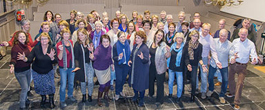

<div class="event-info">
	<div>
		<div class="img-wrap">
	
		</div>
		<div class="songs">
			<p>Hier</p>
			<p>Komen</p>
			<p>De</p>
			<p>Songs</p>
			<p>Te</p>
			<p>Staan</p>
		</div>
		<div class="content-wrap">
    <p><strong>Pop-en Musicalkoor Popart uit de Rijp</strong></p>
	<p>Pop-en Musicalkoor Popart presenteert een gevarieerd repertoire en zingt een brede diversiteit aan muziekgenres zoals (neder)pop, rock, soul, musical, kerst en film.</p>
	<p>Muzikale duizendpoot Jan Doedens is de vaste pianist.</p>
	<p>&nbsp;</p>
	<p>Dirigent: Simon Boerke</p>
	<p>&nbsp;</p>
	<p><a href="https://www.popart-koor.nl" target="_blank">https://www.popart-koor.nl</a></p>
		</div>
	</div>
</div>
